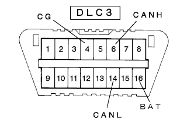
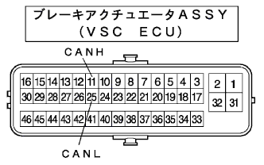
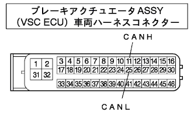
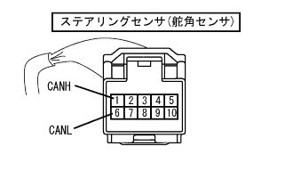
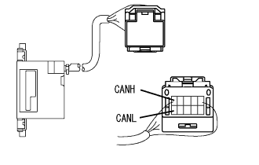
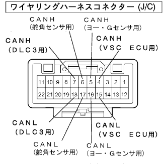
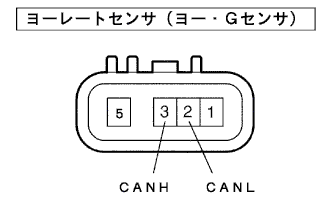
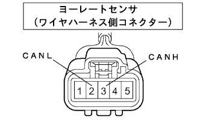

Control system CAN communication system ECU terminal sequence |
DLC3 inspection
Turn off the IG switch.
|  |
Use SST (Toyota Electrical Tester) to check the resistance of each terminal.
| Terminal number | item | Measurement conditions | standard |
|---|---|---|---|
| 6 (Canh) ← → 14 (Canl) | resistance | IG switch off | 54-67Ω |
| 6 (Canh) ← → 16 (BAT) | resistance | IG switch off | 1mΩ or higher |
| 14 (CANL) ← → 16 (BAT) | resistance | IG switch off | 1mΩ or higher |
| 6 (Canh) ← → 4 (CG) | resistance | IG switch off | 3kΩ or higher |
| 14 (CANL) ← → 4 (CG) | resistance | IG switch off | 3kΩ or higher |
Brake actuator ASSY (VSC ECU) inspection
Turn off the IG switch and disconnect the brake actuator ASSY (VSC ECU) connector.
|  |
Inspect the resistance of each terminal using SST (Toyota Electrical Tester).
| Terminal number | item | Measurement conditions | standard |
|---|---|---|---|
| 11 (Canh) ← → 25 (Canl) | resistance | IG switch off | 108-132Ω |
Brake actuator ASSY (VSC ECU) Vehicle harness connector side inspection
Turn off the IG switch and disconnect the connector of the brake actuator (VSC ECU).
|  |
Inspect the resistance of each terminal of the vehicle harness connector using SST (Toyota Electrical Tester).
| Terminal number | item | Measurement conditions | standard |
|---|---|---|---|
| 11 (Canh) ← → 25 (Canl) | resistance | IG switch off | 108-132Ω |
| 11 (Canh) ← → GND | resistance | IG switch off | 3kΩ or higher |
| 25 (CANL) ← → GND | resistance | IG switch off | 3kΩ or higher |
| 11 (Canh) ← → + B | resistance | IG switch off | 1mΩ or higher |
| 25 (CANL) ← → + B | resistance | IG switch off | 1mΩ or higher |
Inspection of the steering sensor (steering angle sensor)
Turn off the IG switch and separate the connector of the steering sensor (steering angle sensor).
|  |
Use SST (Toyota Electrical Tester) to check the resistance of each terminal.
| Terminal number | item | Measurement conditions | standard |
|---|---|---|---|
| 1 (Canh) ← → 6 (Canl) | resistance | IG switch off | 108-132Ω |
Steering sensor (steering angle sensor) Vehicle harness connector side inspection
Turn off the IG switch and disconnect the connector of the steering sensor (steering angle sensor).
|  |
Inspect the resistance of each terminal of the vehicle harness connector using SST (Toyota Electrical Tester).
| Terminal number | item | Measurement conditions | standard |
|---|---|---|---|
| 1 (Canh) ← → 6 (Canl) | resistance | IG switch off | 108-132Ω |
| 1 (Canh) ← → GND | resistance | IG switch off | 3kΩ or higher |
| 6 (CANL) ← → GND | resistance | IG switch off | 3kΩ or higher |
| 1 (Canh) ← → + B | resistance | IG switch off | 1mΩ or higher |
| 6 (CANL) ← → + B | resistance | IG switch off | 1mΩ or higher |
Wiring harness connector (J/C) inspection
Turn off the IG switch and disconnect the wiring harness connector (J/C) connector.
|  |
Use SST (Toyota Electrical Tester) to inspect the resistance of each terminal of the wiring harness connector (J/C).
| Terminal number | item | Measurement conditions | standard |
|---|---|---|---|
| 4, 5, 6, 7 (Canh) ← → 15, 17, 17, 18 (CANL) | resistance | IG switch off | 1mΩ or higher |
| 4 (Canh) ← → 7 (Canh) | resistance | IG switch off | Less than 10Ω |
| 4 (Canh) ← → 6 (Canh) | resistance | IG switch off | Less than 10Ω |
| 4 (Canh) ← → 5 (Canh) | resistance | IG switch off | Less than 10Ω |
| 15 (CANL) ← → 18 (CANL) | resistance | IG switch off | Less than 10Ω |
| 15 (CANL) ← → 17 (CANL) | resistance | IG switch off | Less than 10Ω |
| 15 (CANL) ← → 16 (CANL) | resistance | IG switch off | Less than 10Ω |
|  |
Terminal array
| Terminal number | Terminal symbol |
|---|---|
| 3 | Canh |
| 2 | Canl |
York Rested Sensor (Jaw G sensor) Vehicle harness connector side inspection
Turn off the IG switch and disconnect the connector of the yaw rate (yaw / G sensor).
|  |
Use SST (Toyota Electrical Tester) to check the resistance of each terminal.
| Terminal number | item | Measurement conditions | standard |
|---|---|---|---|
| 3 (Canh) ← → 2 (Canl) | resistance | IG switch off | 54-67Ω |
| 3 (Canh) ← → GND | resistance | IG switch off | 3kΩ or higher |
| 2 (CANL) ← → GND | resistance | IG switch off | 3kΩ or higher |
| 3 (Canh) ← → + B | resistance | IG switch off | 1mΩ or higher |
| 2 (CANL) ← → + B | resistance | IG switch off | 1mΩ or higher |